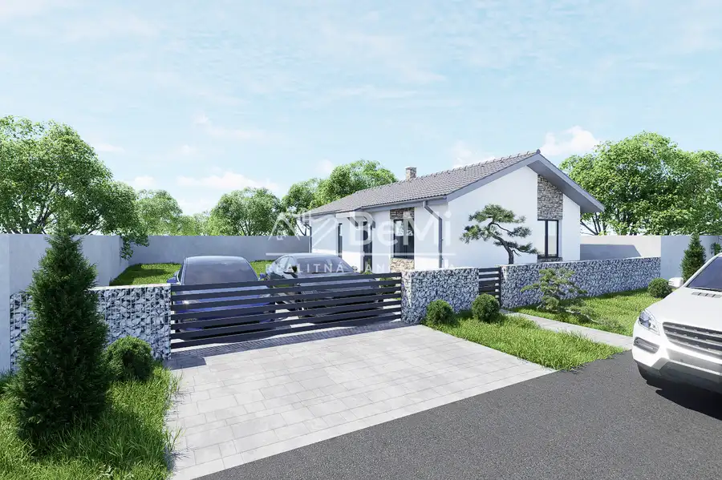
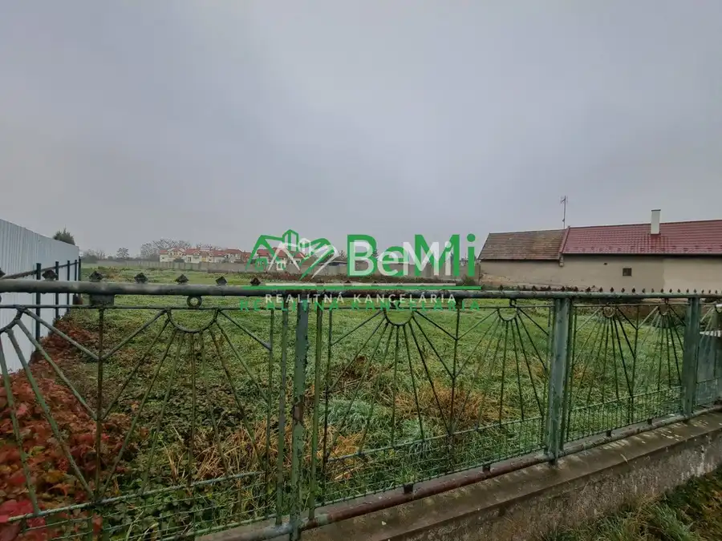
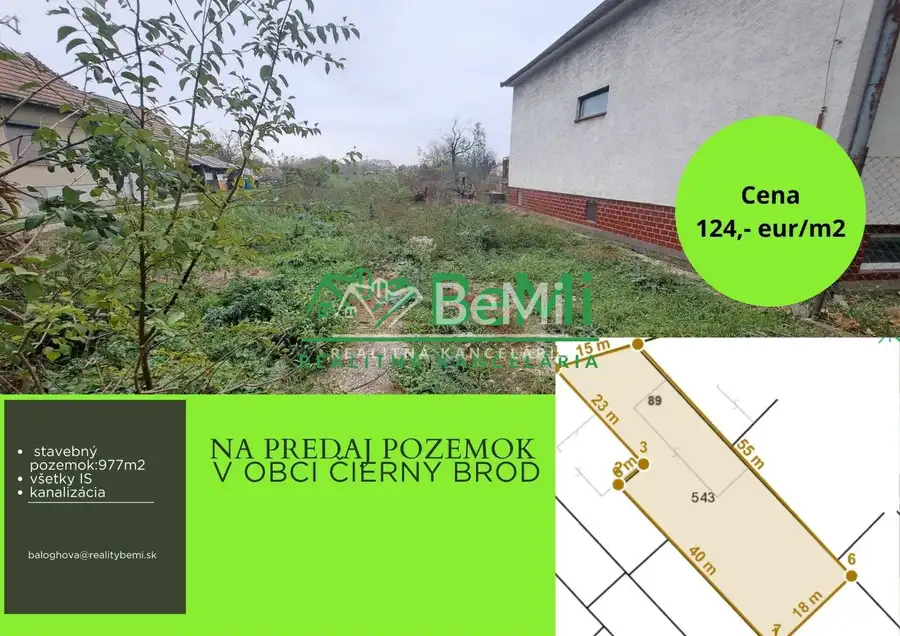
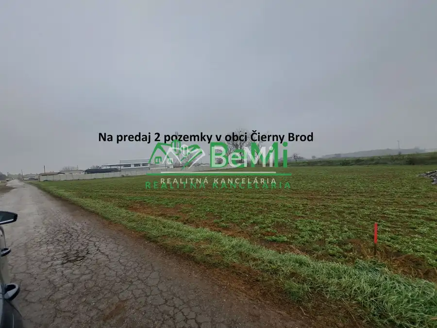
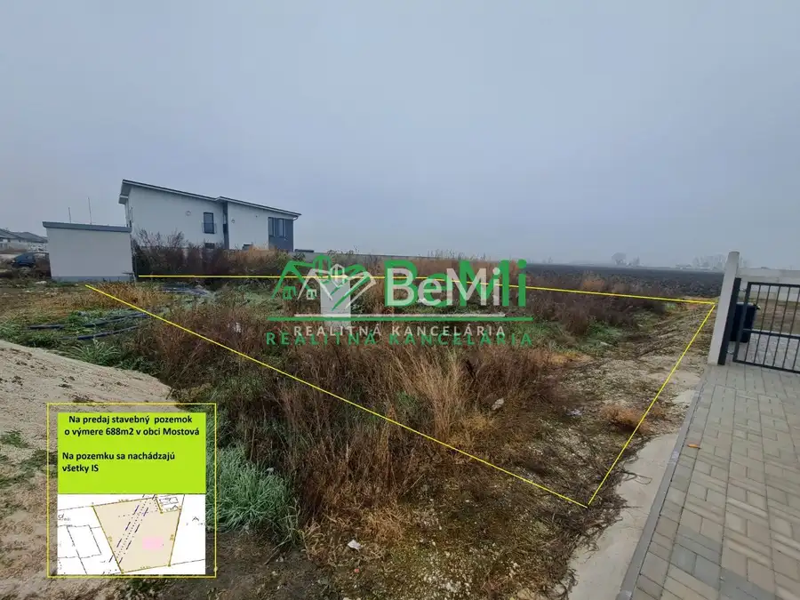
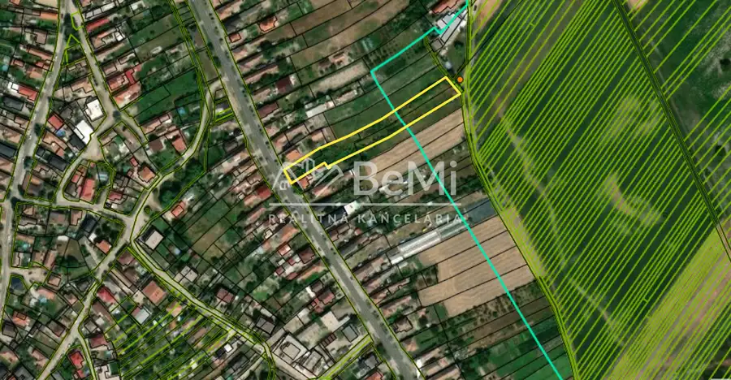
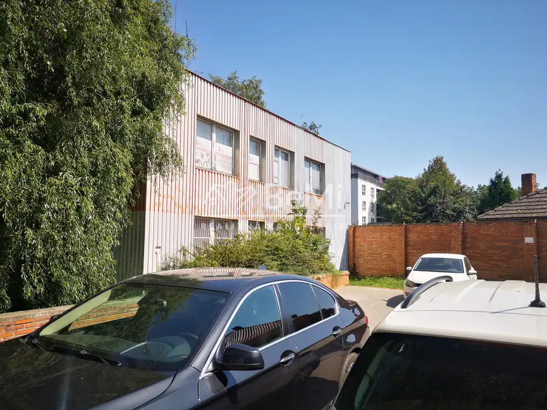

Aktuálna ponuka
Nehnuteľnosti, ktoré ponúkam
12 nehnuteľností na predaj a prenájom. Vyberte typ, alebo napíšte lokalitu.
12 z 12 ponúk
 Komerčné priestoryNové4
230 000 €Prevádzkové/skladové priestory vo Veľkých Úľanoch 004-18-NIBA
Veľké Úľany
Na predaj priestranný a plne vybavený, zabehnutý autoservis, schválený na opravu nákladných, dodávkových aj osobných vozidiel.Priestor je vhodný aj…
Komerčné priestoryNové4
230 000 €Prevádzkové/skladové priestory vo Veľkých Úľanoch 004-18-NIBA
Veľké Úľany
Na predaj priestranný a plne vybavený, zabehnutý autoservis, schválený na opravu nákladných, dodávkových aj osobných vozidiel.Priestor je vhodný aj…
 BytNové10
147 000 €1 izbový byt v Šenkviciach kompletne prerobený 040-113-EVBA
Trnava
1-izbový39.11 m²
Znížená cenaNa predaj kompletne zrekonštruovaný 1-izbový byt s balkónomPonúkame na predaj kompletne zrekonštruovaný 1-izbový byt s výmerou 39,11 m²,…
BytNové10
147 000 €1 izbový byt v Šenkviciach kompletne prerobený 040-113-EVBA
Trnava
1-izbový39.11 m²
Znížená cenaNa predaj kompletne zrekonštruovaný 1-izbový byt s balkónomPonúkame na predaj kompletne zrekonštruovaný 1-izbový byt s výmerou 39,11 m²,…
 Pozemok8
39 000 €Slnečný pozemok - Sládkovičovo - 328 m2 ID 012-14-NIBA
Sládkovičovo
📍 Na predaj pozemok v Sládkovičove – ideálny na realizáciu podľa vlastných predstávPozemok o výmere 328 m², nachádzajúci sa v meste Sládkovičovo, na…
Pozemok8
39 000 €Slnečný pozemok - Sládkovičovo - 328 m2 ID 012-14-NIBA
Sládkovičovo
📍 Na predaj pozemok v Sládkovičove – ideálny na realizáciu podľa vlastných predstávPozemok o výmere 328 m², nachádzajúci sa v meste Sládkovičovo, na…
 Byt10
149 000 €Na predaj – útulný 2-izbový byt v skvelej lokalite v Seredi id 050-113-evba
Sereď
2-izbový41 m²2. podlažie
🏡 NA PREDAJ – ÚTULNÝ 2-IZBOVÝ BYT V SKVELEJ LOKALITE V SEREDI 050-113-EVBAHľadáte štartovacie bývanie, investičný byt alebo útulný byt bez nutnosti…
Byt10
149 000 €Na predaj – útulný 2-izbový byt v skvelej lokalite v Seredi id 050-113-evba
Sereď
2-izbový41 m²2. podlažie
🏡 NA PREDAJ – ÚTULNÝ 2-IZBOVÝ BYT V SKVELEJ LOKALITE V SEREDI 050-113-EVBAHľadáte štartovacie bývanie, investičný byt alebo útulný byt bez nutnosti…

Dom5 158 000 €Na predaj rodinné domy v obci Malá Mača! id038-12-evba Malá Mača PRIPRAVUJEME PRE VÁS NOVÝ PROJEKT V OBCI MALÁ MAČA! id038-12-EVBAPonúkame na predaj 16 rodinných domov, ktoré budú prispôsobené podľa vašich…
PozemokNové3 Cena dohodouStavebný pozemok - 592m2, Čierny Brod ID 015-14-EVBA Čierny Brod 592 m² 015-14-EVBAPonúkame vám na predaj stavebný pozemok v obci Čierny Brod.Pozemok sa nachádza v centre obci Čierny Brod na Hlavnej ulici .Pozemok je…
Pozemok5 Cena dohodouStavebný pozemok - 977m2,Čierny Brod. Čierny Brod 977 m² 013-14-EVBAaPonúkame vám na predaj stavebný pozemok v obci Čierny Brod.Pozemok sa nachádza na začiatku obce Čierny Brod pri reštaurácií Wien . Výmera…
Pozemok4 Cena dohodouStavebný pozemok - 3691 m2/530 m2, ľahký priemysel, Čierny Brod ID 011-14-EVBA Čierny Brod 4221 m² 011-14-EVBAPonúkame vám na predaj 2 pozemky v priemyselnej časti obci Čierny Brod .Pozemky sú vhodné na výstavbu haly na ľahký priemysel. Pozemky si…
Pozemok3 Cena dohodouStavebný pozemok - 688m2, Mostová ID 012-14-EVBA Mostová 688 m² 012-14-EVBAPonúkame vám na predaj stavebný pozemok v obci Mostová.Pozemok sa nachádza v novo vybudovanej časti obce Mostová. Výmera pozemku je…
Pozemok3 Cena dohodouRozsiahly pozemok vo Veľkých Úľanoch (3625m2) ID 003-14-NIBA Veľké Úľany Na predaj rozsiahly pozemok o výmere 3 625 m² v obci Veľké Úľany (okres Galanta). Výborná voľba pre developerov aj súkromných investorov – pozemok je…
Komerčné priestory10 Cena dohodouPrenájom kancelárií na Bratislavskej ulici Galanta 033-28-EVBA Galanta 8 m² 033-28-EVBA Exkluzívne iba u nás Vám ponúkame na prenájom 5 kancelárskych priestorov v blízkosti centra mesta Galanta, na ulici Bratislavská.… DomRezervované9
170 000 €Na predaj novostavby 3 izbový a 4 izbový rodinný dom Veľká Mača, rezidenčné bývanie id036-12-EVBA
Veľká Mača
76 m²
Rezervovaný ✨ NOVÉ BÝVANIE, KDE SA ŽIJE NAOZAJ PRÍJEMNE – NOVOSTAVBY NA PREDAJ ✨📍 Veľká MačaPredstavte si pokojné rána bez ruchu mesta, vlastnú…
DomRezervované9
170 000 €Na predaj novostavby 3 izbový a 4 izbový rodinný dom Veľká Mača, rezidenčné bývanie id036-12-EVBA
Veľká Mača
76 m²
Rezervovaný ✨ NOVÉ BÝVANIE, KDE SA ŽIJE NAOZAJ PRÍJEMNE – NOVOSTAVBY NA PREDAJ ✨📍 Veľká MačaPredstavte si pokojné rána bez ruchu mesta, vlastnú…
Tomuto výberu zatiaľ nezodpovedá žiadna ponuka. Napíšte mi, čo hľadáte.